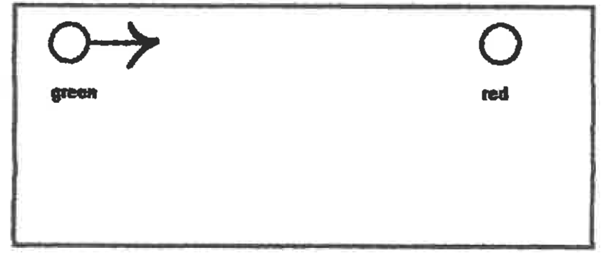
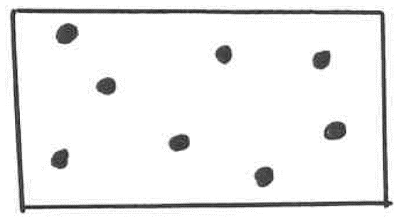
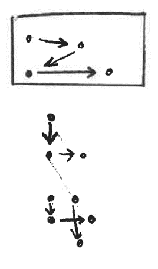

FM 1: CLOTHESPIN ACTIVITY
Purpose:
To develop left to right directionality (fine motor control, counting and color identification.)
Materials:
Cardboard 7" x 14" with green circle on left, red on right.
Procedure:
Have the child put the clothespins on top of the cardboard, working from left to right. Be sure they use
the same hand with which they write.
Have them count clothespins as they put them on and take them off. Ask them how many red, yellow, etc.
The tutor may place clothespins in a color pattern and ask the child to repeat the pattern.

FM 2: RANDOM DOT TO DOTS
Purpose:
To develop fine motor control and to control impulsive pencil strokes.
Materials:
Draw dots randomly on blank paper.
Procedure:
Ask the child to draw lines between dots, stopping directly on each dot without lifting their pencil. May
tell them the dots are islands in the ocean, and to go slowly so they won't fall in the water. Once the
child can master this task, they�ll be able to relate to stopping on the lines of their paper.

FM 3: TRACE A LETTER
Purpose:
To learn proper formation of letters; (fine motor coordination).
Materials:
Inexpensive "magic slate"
Procedure:
Write or print very perfectly the letters the child needs to practice on the clear layer of the magic
slate with a permanent marker. Have the child trace over your letters with the stylus that comes with
the slate.
Lift the clear layer only and the child's version will show on the gray sheet.
FM 4: SAND TRAY
Purpose:
To help a child with letter formation.
Materials:
A jelly roll pan (10"x15"). Sprinkle with one or two tablespoons of fine
white sand. May paint a bright color, if desired.
Or use cornmeal, rice, colored sand, or shaving cream.
Procedure:
Have the child draw letters with their finger, naming the letter and making the sound as they do so.
FM 5: DOT TO DOT WITH ARROWS
Purpose:
To help the child form letters and numbers.
Materials:
Draw dots and arrows on blank paper.
Purpose:
Have the child draw lines following arrows to buried treasure. Then use dots and arrows to help him form
letters and numbers. Make all starting dots green, ending dots red and in between dots black. Have child
start with green (go) dot. Make several of one letter number rather than doing too many letters at one
time so child doesn't get confused.

Auditory/Fine Motor/Oral Expression bin also includes:
Story starter wheels.
Build-a-story flip book.
Chenille sticks (for shaping letters and numbers).
Play dough (for forming letters/numbers).
Sequential phonics book (use with alphabet tile pouch in tutor bucket).
Fun to Chant Activity Book.